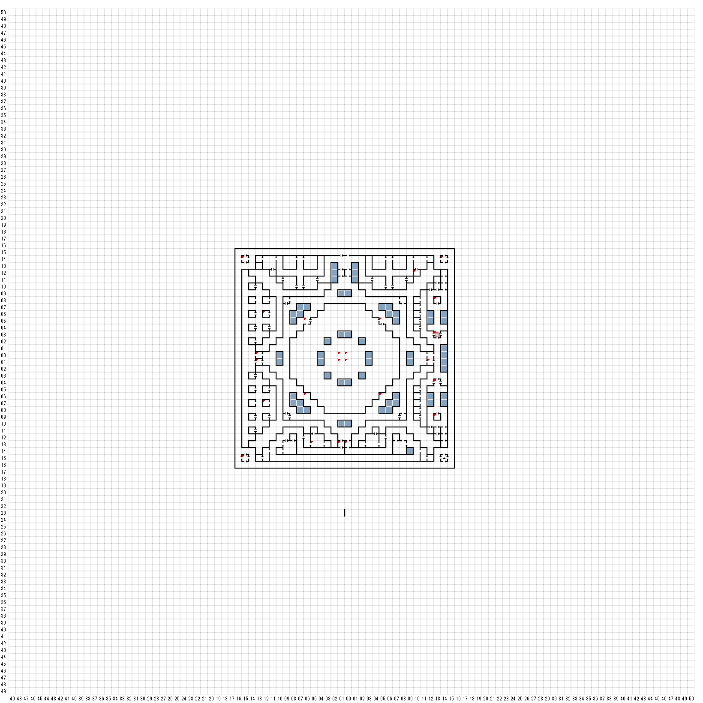

【 西：15，北：14 】
縦穴！
（E:26 S98）
【 西：15，南：15 】
縦穴！
B777 W120 S116へ
【 西：13，北：0 】
吹きすさぶもの凄い風が、目の前の
入り口から襲いかかってきた。
パーティは全員吹き飛ばされた！
【 西：13，南：1 】
吹きすさぶもの凄い風が、目の前の
入り口から襲いかかってきた。
パーティは全員吹き飛ばされた！
【 西：12，北：6 】
ガスの罠！（石になる）
【 西：12，南：7 】
斑点のある大きな鳥が、熱い火ばちの上に
とまり、パーティの方を 刺し貫くような
目付きで凝視した。
そして、鳥は次のような質問を投げかけてきた。
炎の後に霜訪れ、風の後に」雨訪れん。
日の光、ひとたび、大地を暖めれば
驚異の奇跡、そこに残れり。
さすれば、この奇跡の名とは？
答えは？
答:
LIFE
正解：
まさに答えなり！
なすべきことなされたり
STAFFは汝のものなり。
ＳＴＡＦＦofAIR
間違い：
チッチッチ！
Encount
phoenix １
【 西：6，北：5 】
赤い騎士が目の前に敢然と立ちはだかり、こう宣言した。
”私はスペードの王、三軸の門の護衛を命じられている！”
TALK
HELLO
3つの問いを許そう。私は、３つの答を
返すだろう。しかし、印を示さずここを
通ることはできない！
CARD
カードの印だ！
ASPECTS
どういう見地を学びたいのだ？
TIME
私は過去。君の父親の記憶、そして、すべての歩調の起源。
NATURE
私の本質はすべての食物の基礎であり、
すべての土地の財産でもある。
KINGDOM
私の王国は自然の領地。なぜなら、
私は すべての物質の体であり、
すべてのエネルギーの形であるから。
JACK of SPADEでとおれる
先に進みたまえ
【 西：6，南：6 】
黄色い騎士が目の前に敢然と立ちはだかり、こう宣言した。
”私はダイヤの王、三軸の門の護衛を命じられている！”
TALK
HELLO
3つの問いを許そう。私は、３つの答を
返すだろう。しかし、印を示さずここを
通ることはできない！
CARD
カードの印だ！
ASPECTS
どういう見地を学びたいのだ？
TIME
私は未来。明日の預言者。そして現在の子供。
NATURE
私の本質はすべての思考の力であり、
そしてすべての行動の知識でもある
私の王国は、変化の領地。なぜなら、
私は過去の破壊者で、未来の創設者で
あるから。
【 西：5，南：13 】
頭上高くに
乱暴
落ちてきた
ENCOUNT
KONG
FAY
STAFFofEARTH
【 西：1，北：0 】
燃えない、冷たい白い炎が、
奥底からおどりあがった。
USE ORBofLLYLGAMYN
半透明の炎の真ん中から
入り口が現れた！
キラキラ輝く門
入ってみますか？
B8F E0 N11 へ
【 西：1，南：1 】
燃えない、暖かい青い炎が、
奥底からおどりあがった。
USE ORBofLLYLGAMYN
半透明の炎の真ん中から
入り口が現れた！
キラキラ輝く門
入ってみますか？
（E0 S11へ）
【 西：1，南：13 】
大きなシンチュウの猿が、回転木戸で
ぐるぐる回っている。
それが前後にあまりにも乱暴に回転するので
君は無理やり部屋から追い出されてしまった。
MUNKE ＷＡＮＤを持っている場合
部屋に入るとMUNKE ＷＡＮＤが
振動し始め、それにつれて、回転する猿は
動きを止めた。
【 東：0，北：0 】
燃えない、冷ややかな黄色い炎が、
奥底からおどりあがった。
USE ORBofLLYLGAMYN
半透明の炎の真ん中から
入り口が現れた！
キラキラ輝く門
入ってみますか？
B8F E11 N0 へ
【 東：0，南：1 】
燃えない、熱い赤い炎が、
奥底からおどりあがった。
USE ORBofLLYLGAMYN
半透明の炎の真ん中から
入り口が現れた！
キラキラ輝く門
入ってみますか？
B8F W11 N00 へ
【 東：0，南：13 】
大きなシンチュウの猿が、回転木戸で
ぐるぐる回っている。
それが前後にあまりにも乱暴に回転するので
君は無理やり部屋から追い出されてしまった。
MUNKE ＷＡＮＤを持っている場合
部屋に入るとMUNKE ＷＡＮＤが
振動し始め、それにつれて、回転する猿は
動きを止めた。
【 東：5，北：5 】
青い騎士が目の前に敢然と立ちはだかり、こう宣言した。
”私はハートの王、三軸の門の護衛を命じられている！”
TALK
HELLO
3つの問いを許そう。私は、３つの答を
返すだろう。しかし、印を示さずここを
通ることはできない！
CARD
カードの印だ！
ASPECTS
どういう見地を学びたいのだ？
TIME
私は現在。今日の担い手。そして、過去の奴隷。
NATURE
私の本質はすべての悲しみの苦痛であり、
すべての愛の喜びでもある
KINGDOM
私の王国は成長の領地、なぜなら、
私は生命の熱情で、すべての飢餓の
精神であるから。
【 東：5，南：6 】
白い騎士が目の前に敢然と立ちはだかり、こう宣言した。
”私はクラブの王、三軸の門の護衛を命じられている！”
TALK
HELLO
3つの問いを許そう。私は、３つの答を
返すだろう。しかし、印を示さずここを
通ることはできない！
CARD
カードの印だ！
ASPECTS
どういう見地を学びたいのだ？
TIME
私は無限。すべての始まりから終わりまでに至る。
そして、現実のすべての限界を超越する。
NATURE
私の本質は相反するものを持つすべてのもので、
相反するものを持たないすべてのものでもある。
KINGDOM
私の王国は、統一の領地。なぜなら、
私はすべての部分の全体であるから。
GIVE ACEofCLUBS
（渡すと返してくれないので注意）
【 東：10，北：12 】
真夜中の青さをたたえた 深い水たまりが、まるで
嵐の前の静けさのように静かに流れている。
誰が潜る
水たまりの深さは（A）から（P）
潜る深さの記号を押してください
A：癒された
B：癒されたor ダメージを受けた
C：癒されたorなにも起きなかった
D：なにも起きなかった
E：ENCOUNT WATER ELEMENTAL *1
F：なにも起きなかった
G：なにも起きなかった
H：金を失った
I：若返った
J：呪文ポイントがよみがえった
K：癒された
L：直った
M：LUCKを失った
N：HPを失った
O：なにも起きなかった
PENCOUNT
WATER ELEMENTAL *1
DRAGONFINN *1
STAFF of WATER
【 東：12，南：1 】
大きなシンチュウの猿が、回転木戸で
ぐるぐる回っている。
それが前後にあまりにも乱暴に回転するので
君は無理やり部屋から追い出されてしまった。
MUNKE ＷＡＮＤを持っている場合
部屋に入るとMUNKE ＷＡＮＤが
振動し始め、それにつれて、回転する猿は
動きを止めた。
【 東：13，北：8 】
突然
燃える炎が君に襲い掛かった！
ENCOUNT
THE KANZI FIRE KING
FIRE ELEMENTAL
BLACK ROD（LIGHTNING ROD）
【 東：13，北：3 】
火炎嵐！
【 東：13，南：4 】
強力な電流が、大きな弧を描いて
入り口を横切った。
突然それがパーティに向かって飛び跳ね
君のLIGHTNING RODに直撃した
それはショートしてしまった。
【 東：13，南：9 】
猛威を振るう熱によって黒く
ENCOUNT
1 THE ZANA FIRE QUEEN
1 FIRE ELEMENTAL
1 FIRE ELEMENTAL
1 FIRE ELEMENTAL
STAFFofFIRE
【 東：14，北：14 】
縦穴！
（E:90 S62）